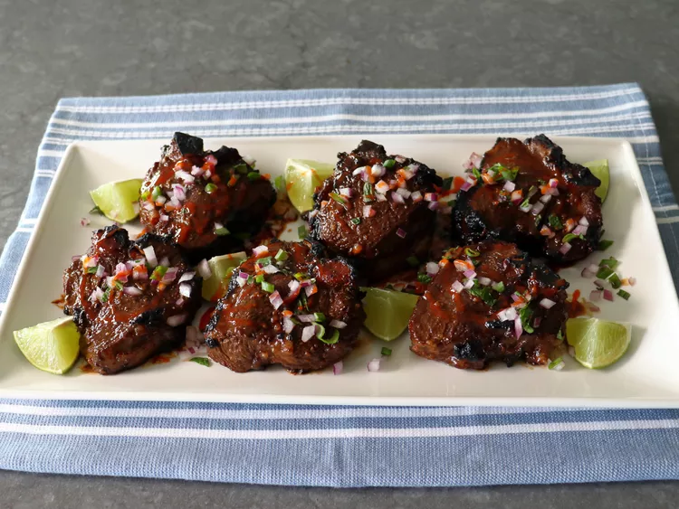

Sweet and Sour Tamarind-Glazed Lamb Chops

Grilling inside, Upside down
There is nothing I enjoy more than sharing an easy, delicious recipe, unless it’s sharing a new, and exciting technique; or, as was the case with these sweet and sour tamarind-glazed lamb chops, and old, and underused...to read the rest of Chef John's article about Sweet & Sour Tamarind-Glazed Lamb Chops
When the weather ruins your grilling plans, broiling works great for these. The simple glaze pairs perfectly with the richer gamier lamb meat and provides a flavor bomb of sweet, sour, spicy and savory, all in one. And, as always, enjoy!
Ingredients
- 1/4 cup packed brown sugar
- 2 tablespoons tamarind paste
- 2 cloves garlic, crushed
- 1 lime, juiced
- 1 tablespoon fish sauce
- 1 1/2 teaspoons kosher salt
- 1 teaspoon Sriracha hot sauce, or other chili sauce, plus more for garnish
- 1/2 teaspoon ground black pepper
- 1/8 teaspoon cinnamon
- 1/8 teaspoon ground clove
- 1/8 teaspoon finely crushed fennel seeds
- 6 thick-cut lamb loin chops (4-ounces each)
- 1 teaspoon vegetable oil for greasing pan
- fresh lime (quartered), diced onion, and fresh mint for garnish (optional)
Directions
- Whisk together brown sugar, tamarind paste, garlic, lime juice, fish sauce, salt, Sriracha, pepper, cinnamon, clove, and fennel for the marinade in a bowl. Add lamb chops and coat thoroughly. Cover and refrigerate for at least 4 and up to 12 hours. During marination turn chops over a few times if possible.
- Preheat the broiler on high for at least 10 minutes. Transfer lamb chops to a greased foil lined pan.
- Broil about 7 to 8 inches from heat, about 4 minutes per side. Remove from the broiler, and brush excess marinade onto both sides.
- Return to the broiler for another 1 to 2 minutes to glaze and finish cooking. An instant-read thermometer inserted into the center should read at least 140 degrees F (60 degrees C)
- Remove from the oven, cover the pan loosely with foil, and let rest for 5 minutes.
- Transfer lamb chops to a serving platter and drizzle with pan juices.. Garnish with lime wedges, diced onion, fresh mint, and more Sriracha if so desired.